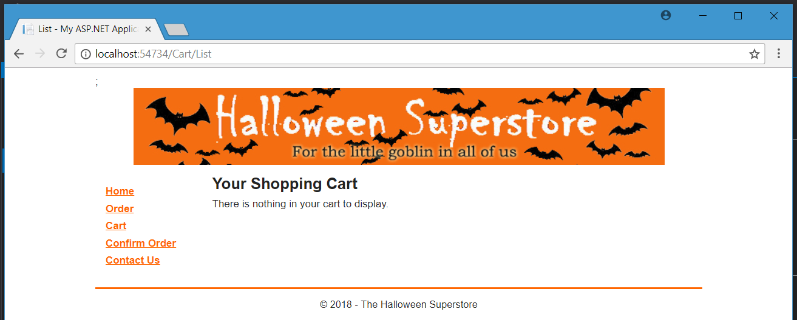

Goal 2
Develop computer program solutions to various business problems using advanced programming techniques
Database Management Systems
I want to make it clear first off: SQL is difficult to wrap my head around. It's not difficult to learn what everything does, but positioning without curly brackets is not my favorite thing in the world. That being said, SQL, and databases in general, are some of the most useful things to programmers available. The concept of concurrency is a useful one for storing data, and having a powerful, low cost solution to build data structures is exciting. Plus, considering how NoSQL databases are getting more popular, I'm interested in seeing how that makes the future of database technology change.
Learning SQL was important for me. I had always been curious about database technologies that weren't Microsoft Access, and now I know. Learning one of the most important and popular database technologies, SQL Server, I believe will also help me in the future, based on how popular it is in companies as well. In addition, finding out the best way to structure databases will be important if I ever need to create a database for a future application, especially on deciding how it should work within a business environment.
Database Processing & Management
Advanced Databases and Processing is the class where we got to discover more about how exactly databases handle concurrency problems. Concurrency problems occur when multiple people are accessing the same table or data cell in a database at the same exact time. One person saves first, but then the next person saves as well, overwriting the changes that the original editor of the database created. It was an interesting topic, and one that eventually led me to explore another way of handling concurrency in the development world, Git. It also assisted me in learning more about the SQL languages that weren't Microsoft Access.
In addition to talking about the philosophy of how exactly databases worked, we did more advanced queries on databases that involved nesting seperate queries into our queries, as well as performing a number of complex inner join statements on our data to find different ways to present data in a good manner to people who may not have the same skillset as one who works in Information Systems. However, these queries also allow one who is a data scientist to take the code and analyze different trends and patterns within the data sets that databases can hold, allowing new knowledge to bubble to the surface. Becuase of this fact, I was very excited to learn all about new inner join statements.
Advanced Programming Topics
Executable
Source Code
This is the class that introduced me to combining databases with the programs I have been creating in both Programming 1 and Programming 2. However, as of now, I've taken this class before the actual database class. Trying to teach myself the extreme basics of databasing without a solid foundation is interesting, but at the very least, it's teaching me to work on my feet and learn something and do something when I don't have everything available to me. It also taught me a lot of about self-research as well.
I will also say that this was a fairly difficult class. Some of the work that you see above involves MVC, which I feel was difficult due to Microsoft and the .NET environment working a lot in the background to create the webpages, without exactly telling you what is happening. The Halloween project and the Multipage project are especially standouts when thinking about the work done in the class. However, there was also a really fun chat app that we made near the end of the semester that showcased the power using network connections within your code you could create. I always keep a copy of that code not only for the novelty, but to show me how to make a basic chat app in the future as well.